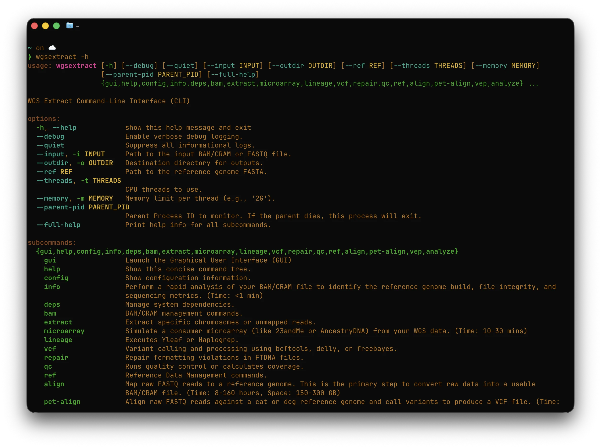

Install
Install the standalone app or use Pixi directly
Use the standalone macOS/Linux installer, the native Windows installer, or one-command developer setup for a source checkout. Linux ARM64 is supported natively.
Read the install guideLocal-first genomics toolkit
WGS Extract CLI is a modern, scriptable command-line recreation of WGS Extract. It wraps common bioinformatics tools so you can inspect BAM/CRAM files, build consumer microarray files, call variants, extract Y/MT reads, manage references, and automate repeatable genome work.

Use the pages below as a map for installing the tool, understanding WGS file types, and running common genome workflows safely.
The topic guide index lists every detailed guide by task, including microarray calling rules, lineage/yBrowse, variant accuracy, configuration and resource planning.
The current release is v0.9.0; its release notes say what it adds. Recent releases brought native Linux ARM64, Oxford Nanopore detection with Sniffles and optional Clair3 calling, CpG methylation pileups, Y-STR panels, queryable variant tables, result manifests (--json) and easier help, on top of native Windows tools and GATK acceleration, more microarray and AADR exports, resource preflight, and one-command developer setup. See GitHub Releases for every release's notes.
Use the standalone macOS/Linux installer, the native Windows installer, or one-command developer setup for a source checkout. Linux ARM64 is supported natively.
Read the install guideLearn the major command families for info, BAM/CRAM, extraction, VCF calling, annotation, lineage, alignment, FASTQ QC, references, and fake data.
Open the CLI guideFollow recipes for microarray simulation, Y-DNA and mtDNA extraction, variant calling, FASTQ to BAM, storage conversion, and testing.
Pick a workflowGet a friendly explanation of whole genome sequencing, coverage, references, variants, file types, read technologies, and interpretation limits.
Read the WGS guideLook up common terms, file extensions, external tools, privacy considerations, and troubleshooting tips for long-running genome jobs.
Open the reference